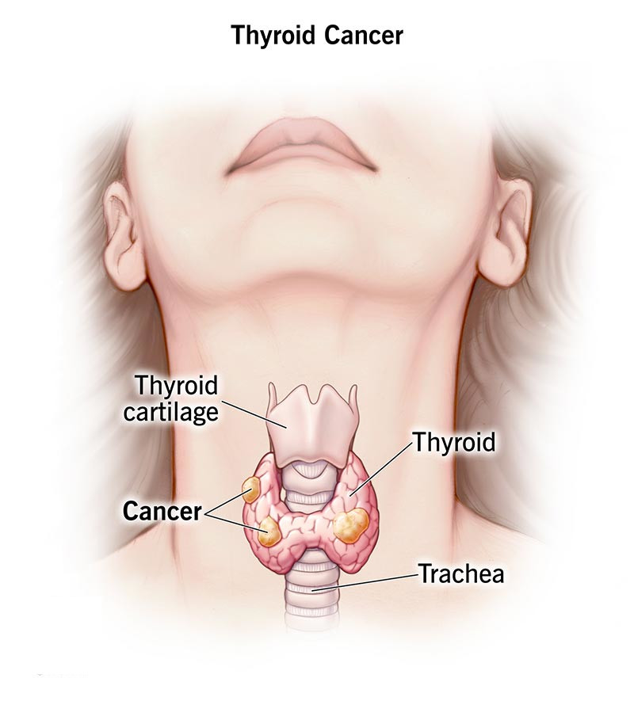

Medica Chat
Hi. This is Medica chatbot. How can I help you?
Thryoid Cancer

Overview
What is thyroid cancer? A Mayo Clinic expert explains
Thyroid cancer is a growth of cells that starts in the thyroid. The thyroid is a butterfly-shaped gland located at the base of the neck, just below the Adam's apple. The thyroid produces hormones that regulate heart rate, blood pressure, body temperature and weight.
Thyroid cancer might not cause any symptoms at first. But as it grows, it can cause signs and symptoms, such as swelling in your neck, voice changes and difficulty swallowing.
Several types of thyroid cancer exist. Most types grow slowly, though some types can be very aggressive. Most thyroid cancers can be cured with treatment.
Thyroid cancer rates seem to be increasing. The increase may be caused by improved imaging technology that allows health care providers to find small thyroid cancers on CT and MRI scans done for other conditions (incidental thyroid cancers). Thyroid cancers found in this way are usually small cancers that respond well to treatments.
Symptoms
Most thyroid cancers don't cause any signs or symptoms early in the
disease. As thyroid cancer grows, it may cause:
• A lump (nodule) that can be felt through the skin on your neck
• A feeling that close-fitting shirt collars are becoming too tight
• Changes to your voice, including increasing hoarseness
• Difficulty swallowing
• Swollen lymph nodes in your neck
• Pain in your neck and throat
Causes
Thyroid cancer happens when cells in the thyroid develop changes in their DNA. A cell's DNA contains the instructions that tell the cell what to do. The changes, which doctors call mutations, tell the cells to grow and multiply rapidly. The cells go on living when healthy cells would naturally die. The accumulating cells form a mass called a tumor.
The tumor can grow to invade nearby tissue and can spread (metastasize) to the lymph nodes in the neck. Sometimes the cancer cells can spread beyond the neck to the lungs, bones and other parts of the body.
For most thyroid cancers, it's not clear what causes the DNA changes that cause the cancer.
Types of thyroid cancer
Thyroid cancer is classified into types based on the kinds of cells found in the tumor. Your type is determined when a sample of tissue from your cancer is examined under a microscope. The type of thyroid cancer is considered in determining your treatment and prognosis.
Types of thyroid cancer include:
• Differentiated thyroid cancers. This broad category includes types of thyroid cancer that start in the cells that produce and store thyroid hormones. These cells are called follicular cells. Differentiated thyroid cancers cells appear similar to healthy cells when viewed under a microscope.
o Papillary thyroid cancer. This is the most common type of thyroid cancer. It can happen at any age, but it most often affects people ages 30 to 50. Most papillary thyroid cancers are small and respond well to treatment, even if the cancer cells spread to the lymph nodes in the neck. A small portion of papillary thyroid cancers are aggressive and may grow to involve structures in the neck or spread to other areas of the body.
o Follicular thyroid cancer. This rare type of thyroid cancer usually affects people older than 50. Follicular thyroid cancer cells don't often spread to the lymph nodes in the neck. But some large and aggressive cancers may spread to other parts of the body. Follicular thyroid cancer most often spreads to the lungs and bones.
o Hurthle cell thyroid cancer. This rare type of thyroid cancer was once considered a type of follicular thyroid cancer. Now it is considered its own type because the cancer cells behave differently and respond to different treatments. Hurthle cell thyroid cancers are aggressive and can grow to involve structures in the neck and spread to other parts of the body.
o Poorly differentiated thyroid cancer. This rare type of thyroid cancer is more aggressive than other differentiated thyroid cancers and often doesn't respond to the usual treatments.
• Anaplastic thyroid cancer. This rare type of thyroid cancer grows quickly and can be difficult to treat. However, treatments can help slow the progression of the disease. Anaplastic thyroid cancer tends to occur in people older than 60. It can cause severe signs and symptoms, such as neck swelling that worsens very quickly and may lead to difficulty breathing and swallowing.
• Medullary thyroid cancer. This rare type of thyroid cancer begins in thyroid cells called C cells, which produce the hormone calcitonin. Elevated levels of calcitonin in the blood can indicate medullary thyroid cancer at a very early stage. Some medullary thyroid cancers are caused by a gene called RET that's passed from parents to children. Changes in the RET gene can cause familial medullary thyroid cancer and multiple endocrine neoplasia, type 2. Familial medullary thyroid cancer increases the risk of thyroid cancer. Multiple endocrine neoplasia, type 2, increases the risk of thyroid cancer, adrenal gland cancer and other types of cancers.
• Other rare types. Other very rare types of cancer can start in the thyroid. These include thyroid lymphoma, which begins in the immune system cells of the thyroid, and thyroid sarcoma, which begins in the connective tissue cells of the thyroid.
Risk factors
Factors that may increase the risk of thyroid cancer include:
• Female sex. Thyroid cancer occurs more often in women than in men. Experts think it may be related to the hormone estrogen. People who are assigned female sex at birth generally have higher levels of estrogen in their bodies.
• Exposure to high levels of radiation. Radiation therapy treatments to the head and neck increase the risk of thyroid cancer.
• Certain inherited genetic syndromes. Genetic syndromes that increase the risk of thyroid cancer include familial medullary thyroid cancer, multiple endocrine neoplasia, Cowden syndrome and familial adenomatous polyposis. Types of thyroid cancer that sometimes run in families include medullary thyroid cancer and papillary thyroid cancer.
Complications
cancer that comes back
Thyroid cancer can return despite successful treatment, and it can even come back if you've had your thyroid removed. This could happen if cancer cells spread beyond the thyroid before it's removed.
Most thyroid cancers aren't likely to recur, including the most common types of thyroid cancer — papillary thyroid cancer and follicular thyroid cancer. Your health care provider can tell you if your cancer has an increased risk of recurring based on the particulars of your cancer.
Recurrence is more likely if your cancer is aggressive or if it grows beyond your thyroid. When thyroid cancer recurrence happens, it's usually found in the first five years after your initial diagnosis.
Thyroid cancer that comes back still has a good prognosis. It's often treatable, and most people will have successful treatment.
Thyroid cancer may recur in:
• Lymph nodes in the neck
• Small pieces of thyroid tissue left behind during surgery
• Other areas of the body, such as the lungs and bones
Your health care provider may recommend periodic blood tests or thyroid scans to check for signs that your cancer has returned. At these appointments, your provider may ask if you've experienced any signs and symptoms of thyroid cancer recurrence, such as:
• Neck pain
• A lump in the neck
• Trouble swallowing
• Voice changes, such as hoarseness
Thyroid cancer that spreads (metastasizes)
Thyroid cancer sometimes spreads to nearby lymph nodes or to other parts of the body. The cancer cells that spread might be found when you're first diagnosed or they might be found after treatment. The great majority of thyroid cancers don't ever spread.
When thyroid cancer spreads, it most often travels to:
• Lymph nodes in the neck
• Lungs
• Bones
• Brain
• Liver
• Skin
Thyroid cancer that spreads might be detected on imaging tests, such as CT and MRI, when you're first diagnosed with thyroid cancer. After successful treatment, your health care provider might recommend follow-up appointments to look for signs that your thyroid cancer has spread. These appointments might include nuclear imaging scans that use a radioactive form of iodine and a special camera to detect thyroid cancer cells.
Prevention
Doctors aren't sure what causes the gene changes that lead to most thyroid cancers, so there's no way to prevent thyroid cancer in people who have an average risk of the disease.
Prevention for people with a high risk
Adults and children with an inherited gene that increases the risk of medullary thyroid cancer may consider thyroid surgery to prevent cancer (prophylactic thyroidectomy). Discuss your options with a genetic counselor who can explain your risk of thyroid cancer and your treatment options.
Prevention for people near nuclear power plants
A medication that blocks the effects of radiation on the thyroid is sometimes provided to people living near nuclear power plants in the United States. The medication (potassium iodide) could be used in the unlikely event of a nuclear reactor accident. If you live within 10 miles of a nuclear power plant and are concerned about safety precautions, contact your state or local emergency management department for more information.
When to see a doctor
If you experience any signs or symptoms that worry you, make an appointment with your health care provider.